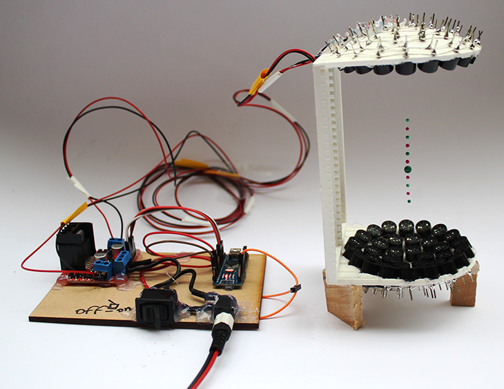
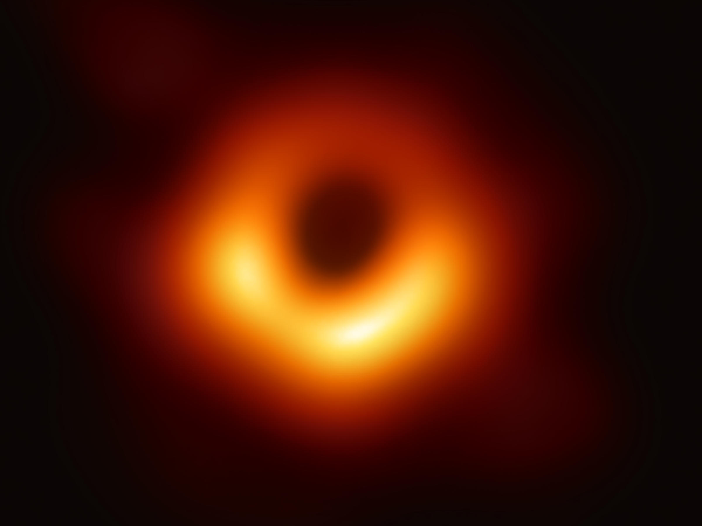

Physics and Maths
Tutor
Tutor

Google
Classroom
Classroom
Seneca
Scientists can use sound waves to suspend small objects and liquids in mid-air. They achieve this by projecting sounds against each other to create a stationary wave. This stationary wave has 'quiet' spots where small objects and liquids can be suspended. This technique is being developed to filter blood more efficiently to developing new printers.
The Event Horizon Telescope just took the first image of the black hole at the centre of Galaxy M87. Black holes are famously hard to see. Their gravity is so extreme that nothing, not even light, can escape across the boundary at a black hole's edge. Some black holes centres stand out. They gather bright disks of gas and other material that surrounds the black hole...
